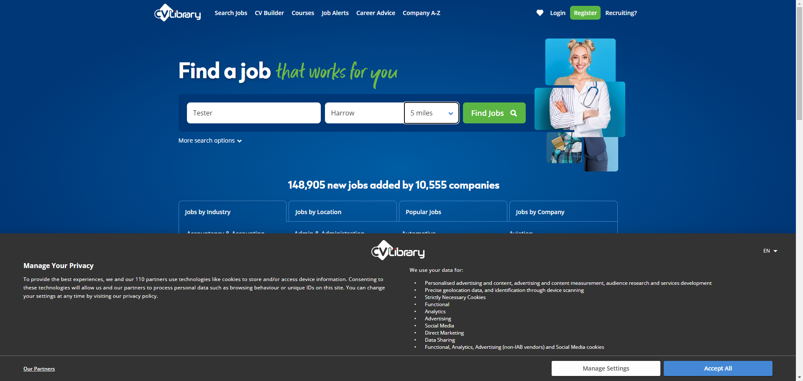
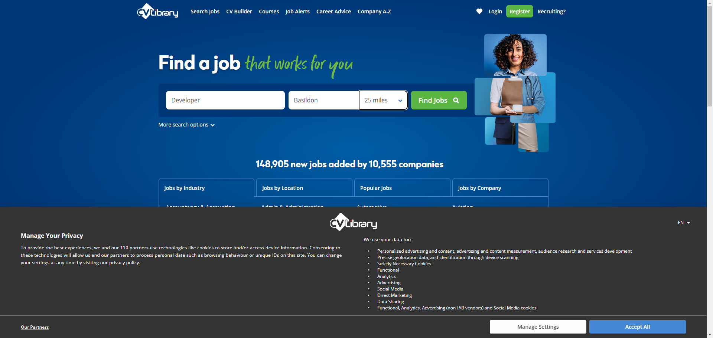
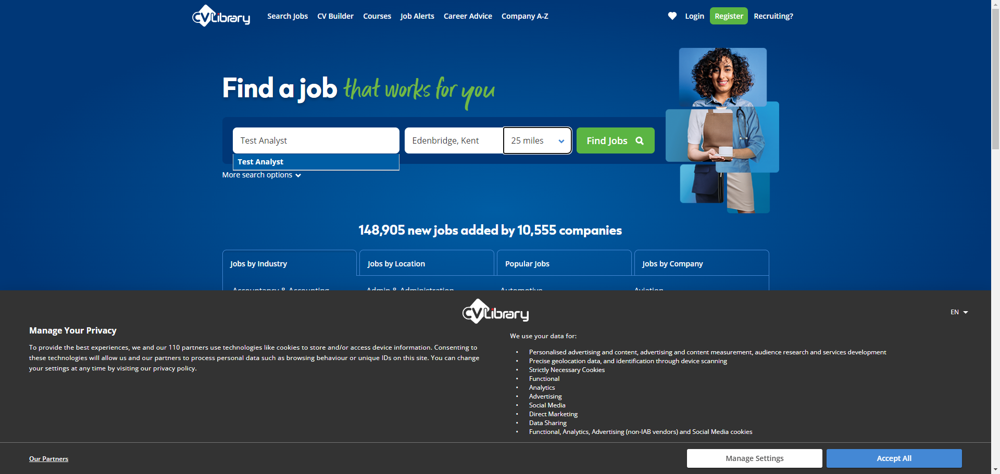
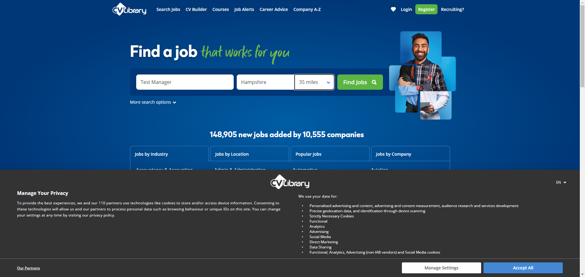

Started
Dec 21, 2023 02:00:14 am
Ended
Dec 21, 2023 02:00:41 am
Features Passed
0
Features Failed
1
Features
Scenarios
Steps
Timeline
Tags
| Name | Passed | Failed | Skipped | Others | Passed % |
|---|---|---|---|---|---|
| @author_MKT | 0 | 7 | 0 | 0 | 0% |
System/Environment
| Name | Value |
|---|---|
| Engineer | MKT |
| Project | CV Library |
| os | Windows |
-
Job Search functionality
02:00:15 / 00:00:26:793 Fail
Job Search functionality
12.21.2023 02:00:15 12.21.2023 02:00:41 00:00:26:793 · #test-id=1FailVerify job search results using different data setFailVerify job search results using different data setGiven I am on homepageWhen I enter job title "Tester"And I enter location "Harrow"And I select distance "5 miles"And I click on more search Options linkAnd I enter salaryMin "30000"Step skippedAnd I enter salaryMax "500000"Step skippedAnd I select salaryType "Per annum"Step skippedAnd I select jobType "Permanent"Step skippedAnd I click on 'Find Jobs' buttonStep skippedThen I should see the result "Permanent Tester jobs in Harrow on the Hill"Step skippeduk.co.library.steps.Hooks.tearDown(io.cucumber.java.Scenario)Verify job search results using different data setFailVerify job search results using different data setGiven I am on homepageWhen I enter job title "Developer"And I enter location "Basildon"And I select distance "25 miles"And I click on more search Options linkAnd I enter salaryMin "40000"Step skippedAnd I enter salaryMax "60000"Step skippedAnd I select salaryType "Per annum"Step skippedAnd I select jobType "Contract"Step skippedAnd I click on 'Find Jobs' buttonStep skippedThen I should see the result "Contract Developer jobs in Basildon"Step skippeduk.co.library.steps.Hooks.tearDown(io.cucumber.java.Scenario)Verify job search results using different data setFailVerify job search results using different data setGiven I am on homepageWhen I enter job title "Quality Engineer"And I enter location "Edinburgh, City of Edinburgh"And I select distance "10 miles"And I click on more search Options linkAnd I enter salaryMin "40000"Step skippedAnd I enter salaryMax "70000"Step skippedAnd I select salaryType "Per annum"Step skippedAnd I select jobType "Temporaray"Step skippedAnd I click on 'Find Jobs' buttonStep skippedThen I should see the result "Temporary Quality Engineer jobs in Edinburgh"Step skippeduk.co.library.steps.Hooks.tearDown(io.cucumber.java.Scenario)Verify job search results using different data setFailVerify job search results using different data setGiven I am on homepageWhen I enter job title "Quality Assurance"And I enter location "London"And I select distance "35 miles"And I click on more search Options linkAnd I enter salaryMin "45000"Step skippedAnd I enter salaryMax "75000"Step skippedAnd I select salaryType "Per annum"Step skippedAnd I select jobType "Apprenticeship"Step skippedAnd I click on 'Find Jobs' buttonStep skippedThen I should see the result "Apprenticeship Quality Assurance jobs in London"Step skippeduk.co.library.steps.Hooks.tearDown(io.cucumber.java.Scenario)Verify job search results using different data setFailVerify job search results using different data setGiven I am on homepageWhen I enter job title "Test Engineer"And I enter location "Derby"And I select distance "10 miles"And I click on more search Options linkAnd I enter salaryMin "25000"Step skippedAnd I enter salaryMax "45000"Step skippedAnd I select salaryType "Per annum"Step skippedAnd I select jobType "Part Time"Step skippedAnd I click on 'Find Jobs' buttonStep skippedThen I should see the result "Part Time Test Engineer jobs in Derby"Step skippeduk.co.library.steps.Hooks.tearDown(io.cucumber.java.Scenario)Verify job search results using different data setFailVerify job search results using different data setGiven I am on homepageWhen I enter job title "Test Analyst"And I enter location "Edenbridge, Kent"And I select distance "25 miles"And I click on more search Options linkAnd I enter salaryMin "25000"Step skippedAnd I enter salaryMax "45000"Step skippedAnd I select salaryType "Per annum"Step skippedAnd I select jobType "Permanent"Step skippedAnd I click on 'Find Jobs' buttonStep skippedThen I should see the result "Permanent Test Analyst jobs in Edenbridge"Step skippeduk.co.library.steps.Hooks.tearDown(io.cucumber.java.Scenario)Verify job search results using different data setFailVerify job search results using different data setGiven I am on homepageWhen I enter job title "Test Manager"And I enter location "Hampshire"And I select distance "35 miles"And I click on more search Options linkAnd I enter salaryMin "35000"Step skippedAnd I enter salaryMax "65000"Step skippedAnd I select salaryType "Per annum"Step skippedAnd I select jobType "Permanent"Step skippedAnd I click on 'Find Jobs' buttonStep skippedThen I should see the result "Permanent Test Manager jobs in Hampshire"Step skippeduk.co.library.steps.Hooks.tearDown(io.cucumber.java.Scenario)Verify job search results using different data set
-
@author_MKT
7 tests
@author_MKT
7 failedStatus Timestamp TestName Fail 02:00:15 am Verify job search results using different data set Job Search functionality.Verify job search results using different data setFail 02:00:19 am Verify job search results using different data set Job Search functionality.Verify job search results using different data setFail 02:00:23 am Verify job search results using different data set Job Search functionality.Verify job search results using different data setFail 02:00:26 am Verify job search results using different data set Job Search functionality.Verify job search results using different data setFail 02:00:30 am Verify job search results using different data set Job Search functionality.Verify job search results using different data setFail 02:00:34 am Verify job search results using different data set Job Search functionality.Verify job search results using different data setFail 02:00:38 am Verify job search results using different data set Job Search functionality.Verify job search results using different data set
-
org.openqa.selenium.ElementClickInterceptedException
7 tests
org.openqa.selenium.ElementClickInterceptedException
7 failedStatus Timestamp TestName Fail 02:00:18 am And I click on more search Options link Job Search functionality.Verify job search results using different data set.And I click on more search Options linkFail 02:00:21 am And I click on more search Options link Job Search functionality.Verify job search results using different data set.And I click on more search Options linkFail 02:00:25 am And I click on more search Options link Job Search functionality.Verify job search results using different data set.And I click on more search Options linkFail 02:00:29 am And I click on more search Options link Job Search functionality.Verify job search results using different data set.And I click on more search Options linkFail 02:00:33 am And I click on more search Options link Job Search functionality.Verify job search results using different data set.And I click on more search Options linkFail 02:00:36 am And I click on more search Options link Job Search functionality.Verify job search results using different data set.And I click on more search Options linkFail 02:00:40 am And I click on more search Options link Job Search functionality.Verify job search results using different data set.And I click on more search Options link